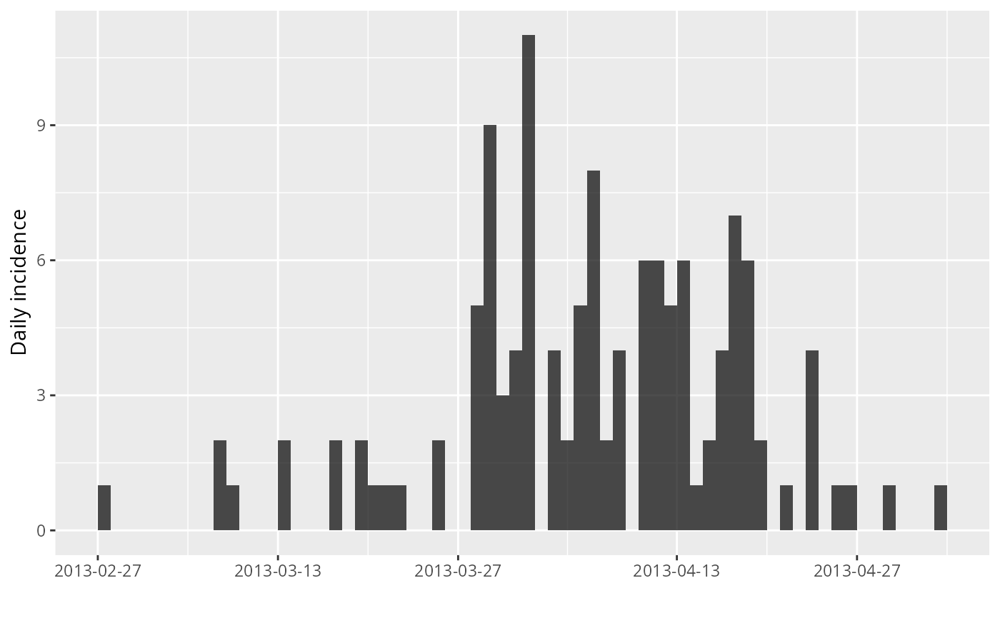
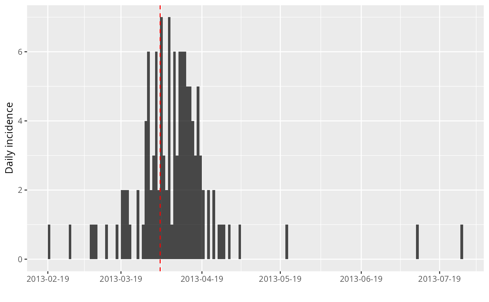

This function can be used to find the peak of an epidemic curve stored as an
incidence object.
find_peak(x, pool = TRUE)Arguments
Value
The date of the (first) highest incidence in the data.
See also
estimate_peak() for bootstrap estimates of the peak time
Examples
if (require(outbreaks) && require(ggplot2)) { withAutoprint({
i <- incidence(fluH7N9_china_2013$date_of_onset)
i
plot(i)
## one simple bootstrap
x <- bootstrap(i)
x
plot(x)
## find 95% CI for peak time using bootstrap
find_peak(i)
## show confidence interval
plot(i) + geom_vline(xintercept = find_peak(i), col = "red", lty = 2)
})}
#> > i <- incidence(fluH7N9_china_2013$date_of_onset)
#> 10 missing observations were removed.
#> > i
#> <incidence object>
#> [126 cases from days 2013-02-19 to 2013-07-27]
#>
#> $counts: matrix with 159 rows and 1 columns
#> $n: 126 cases in total
#> $dates: 159 dates marking the left-side of bins
#> $interval: 1 day
#> $timespan: 159 days
#> $cumulative: FALSE
#>
#> > plot(i)
 #> > x <- bootstrap(i)
#> > x
#> <incidence object>
#> [126 cases from days 2013-02-27 to 2013-05-03]
#>
#> $counts: matrix with 66 rows and 1 columns
#> $n: 126 cases in total
#> $dates: 66 dates marking the left-side of bins
#> $interval: 1 day
#> $timespan: 66 days
#> $cumulative: FALSE
#>
#> > plot(x)
#> > x <- bootstrap(i)
#> > x
#> <incidence object>
#> [126 cases from days 2013-02-27 to 2013-05-03]
#>
#> $counts: matrix with 66 rows and 1 columns
#> $n: 126 cases in total
#> $dates: 66 dates marking the left-side of bins
#> $interval: 1 day
#> $timespan: 66 days
#> $cumulative: FALSE
#>
#> > plot(x)

#> > find_peak(i)
#> [1] "2013-04-03"
#> > plot(i) + geom_vline(xintercept = find_peak(i), col = "red", lty = 2)
